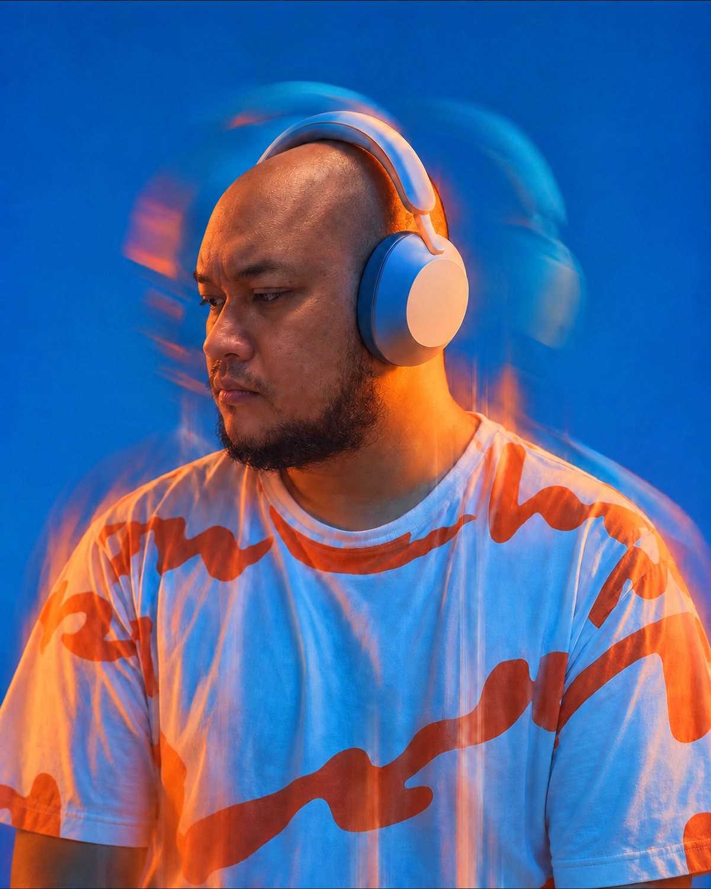

Why? Think further.
Building software companies since 2008. The current one is four people doing what eighteen used to.
Founder of Elux Space, an AI-native design studio in Yogyakarta. I help owners decide what AI should automate, what it should assist, and what it should never touch.
Every piece of work gets one of three verdicts
on every task
Most owners ask “what can AI do for us?” That question has no edges, so the answer is always “everything,” and the project dies of scope. I ask a narrower one: for this piece of work, which pile does it belong in?
Automate
Repetitive, well-defined, low-judgment. A human touching it adds cost, not quality. Build the pipeline and remove the person from the loop.
Assist
Judgment stays with a person; the machine drafts, checks, and accelerates. Most real work lives here, and most failed AI projects tried to push it into the first pile.
Leave alone
The work is the relationship, the taste, or the accountability. Automating it removes the reason the client pays you. This pile is usually the one that saves the business.
Eighteen years, two sides
Side B: building smaller
A timeline, not a résumé. Every line has a year. The only entry without one is marked, and it stays marked until the year is confirmed.
A2006 — 2020
Informatics engineering, Surabaya.
Hosting and software development, started in the third year of university. The first company.
Web and mobile development studio.
The role rotated as the company needed it. First sales and raising investment. Then admin, legal, finance and HR. Then the business model itself. Five years inside every function that breaks when you automate it carelessly.
Business school, Bandung — taken while running operations at DOT.
Exited. The line about why is Arya’s to write.
B2020 — now
Long-form video, produced and edited in-house. The creative turn.
A UI/UX and product design studio in Yogyakarta, remote-first from day one.
The studio at its largest.
The year before the rebuild.
Revenue unchanged from 2025. Rebuilt around AI instead of hiring around it. The uncomfortable part: that took decisions about people, not just tools, and every one of them is logged below.
Verdicts, with the numbers attached
Each on its own page
Verdict entries
One real piece of work — a client project, an Elux process, a personal build, or a paid audit — sorted into a pile, with the figure before, the result after, and the thing I refused to automate. Dated, and revised in the open.
Notes
A paragraph, not an argument. Something seen this week that changes a verdict, or should. Notes are allowed to be wrong; entries are not.
- 01
- The work
- 02
- Figure before
- 03
- Verdict
- 04
- What I refused to automate
- 05
- Result
- 06
- The uncomfortable part
- 07
- Tools
- 08
- Date · revised
No number, no entry. No refusal named, entry unfinished.
Entry 01 written. Awaiting publication clearance.
Two ways in
One is the studio.
An AI decision audit, for owners
I go through your actual work — not a deck about it — and sort it into the three piles. You leave with a list of what to automate, what to assist, and what to leave alone, with the reasoning written down so it survives me leaving the room.
From IDR 10,000,000
Product and UI/UX design, by Elux Space
The four-person studio the record above describes. Design and build for products that have to ship. Scope, quotes, and the work itself live on the studio’s own site.
Quoted per project
Colophon. Set in Archivo, Newsreader and JetBrains Mono. This page looks like the back of a 1960 jazz LP sleeve on purpose: one photograph, one spot colour, and the credits typeset so they can be read. Nothing here animates. Nothing here was generated except the grain.
S1 Teknik Informatika, Institut Teknologi Sepuluh Nopember · S2 Business, SBM Institut Teknologi Bandung · Yogyakarta, Indonesia